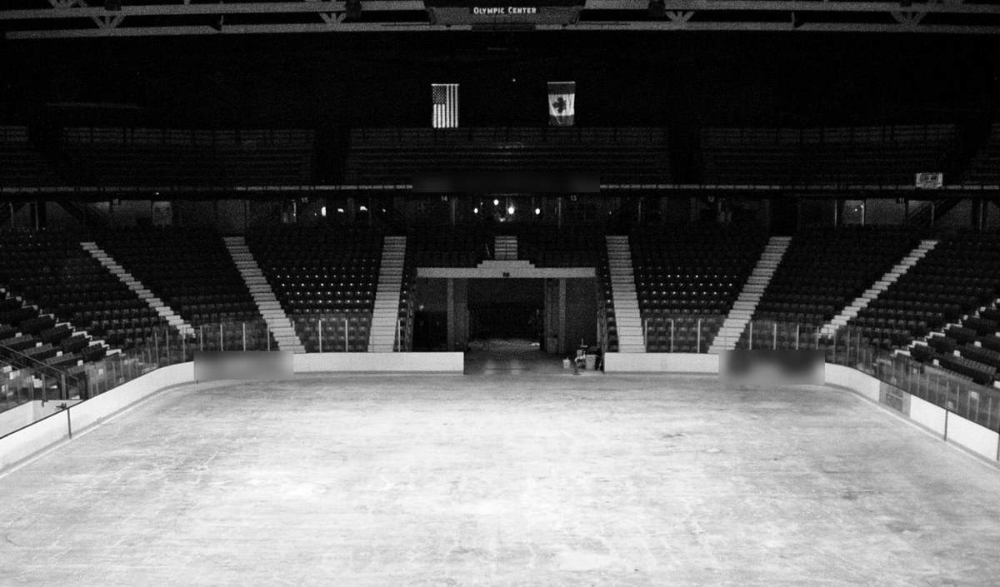
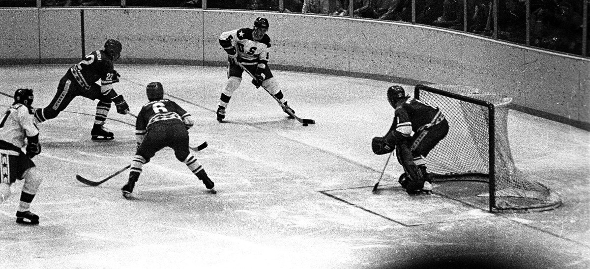

NUEVA YORK · MARQUESINA: RECREACIÓN
FEB 1980
1
CALENDARIO: RECREACIÓN
SÁBADO 9 · PARTIDO DE PREPARACIÓN
11.243 ESPECTADORES
FICHA · EQUIPO
EE. UU.
UNIVERSITARIOS
EDAD MEDIA · 22 AÑOS
VS
FICHA · EQUIPO
URSS
SELECCIÓN
ORO OLÍMPICO DESDE 1964
EE. UU.
URSS
0
0
MARCADOR: RECREACIÓN

FICHA · ENTRENADOR
SELECCIÓN DE EE. UU. · 1980
FOTO: NEW YORK RANGERS / NHL, 1983 · DOMINIO PÚBLICO
ANTES DEL PARTIDO · HERB BROOKS
DECLARACIÓN PREVIA AL PARTIDO (STAR TRIBUNE) · TRADUCCIÓN · RECORTE: RECREACIÓN
FEB 1980
9
CALENDARIO: RECREACIÓN
+0
DÍAS

EL PABELLÓN DE LAKE PLACID HOY · FOTO: AARON DANIELG, DOMINIO PÚBLICO
DEPORTESLAKE PLACID · 22/02/1980 · RECREACIÓN

EE. UU. – URSS · FOTO: HENRY ZBYSZYNSKI, CC BY 2.0 (MODIFICADA)
EE. UU.
URSS
3
10
EE. UU.
URSS
3
10
 JIM CRAIG TRAS EL ORO · 24/02/1980
JIM CRAIG TRAS EL ORO · 24/02/1980FOTO: DAVID TENENBAUM / AP, DOMINIO PÚBLICO
FOTOS: NEW YORK RANGERS / NHL (DOMINIO PÚBLICO)
AARON DANIELG (DOMINIO PÚBLICO) · HENRY ZBYSZYNSKI (CC BY 2.0)
DAVID TENENBAUM / AP (DOMINIO PÚBLICO) · VÍA WIKIMEDIA COMMONS
MARQUESINA, FICHAS, MEDALLAS, MARCADOR, CALENDARIO Y RECORTE: RECREACIÓN
AARON DANIELG (DOMINIO PÚBLICO) · HENRY ZBYSZYNSKI (CC BY 2.0)
DAVID TENENBAUM / AP (DOMINIO PÚBLICO) · VÍA WIKIMEDIA COMMONS
MARQUESINA, FICHAS, MEDALLAS, MARCADOR, CALENDARIO Y RECORTE: RECREACIÓN